Cloud NGFW on AWS
End-to-end guide: marketplace subscription through verified traffic inspection with Cloud NGFW as a managed firewall service
This guide follows a management-first approach. Cloud NGFW management (via Panorama or Strata Cloud Manager (SCM)) is configured before any AWS infrastructure is deployed. This ensures Cloud NGFW resources bootstrap into a fully configured management plane on creation.
Design model: Combined Design (TGW hub-and-spoke for east-west + distributed inbound in spoke VPCs) with GWLB endpoints and non-overlay routing.
Deployment method: All AWS infrastructure (Phases 4–6) is deployed with Terraform using the official Palo Alto Networks SWFW Modules Cloud NGFW Combined Design example.
Architecture Overview
Cloud NGFW for AWS is a Palo Alto Networks next-generation firewall delivered as a fully managed, cloud-native service. Palo Alto Networks owns and operates the underlying firewall infrastructure (including scaling, patching, and high availability) while you retain full control over security policy. Traffic reaches the Cloud NGFW through NGFW endpoints (AWS Gateway Load Balancer endpoints) that you place in your VPC subnets and reference in VPC route tables.
Five deployment models exist. Each balances control, complexity, and blast radius differently. Expand the model that matches your environment to study the architecture and traffic flows.
- Combined — Best for most environments. Centralizes east-west and outbound inspection in a security VPC via TGW, while distributing inbound inspection via cross-account NGFW endpoints in each spoke VPC. Start here if unsure.
- Centralized — All traffic flows (inbound, outbound, east-west) route through a central security VPC via TGW. Simplifies management but requires an internet-facing ELB in the security VPC for inbound traffic.
- Distributed — Each VPC has its own Cloud NGFW. No TGW required. Simplest to deploy but does not inspect inter-VPC (east-west) traffic across VPCs.
- Isolated — Cloud NGFW shared across multiple standalone VPCs via cross-account endpoints. No TGW. Good for independent VPCs that do not need east-west connectivity.
- Cloud WAN — Replaces TGW with AWS Cloud WAN for global, multi-region connectivity. Use when Cloud WAN is already your backbone.
Key Concepts
Availability Zone mapping is account-specific. AWS maps AZ names (e.g., us-east-1a) to physical AZ IDs (e.g., use1-az1) independently per account. This means us-east-1a in Account A may correspond to a different physical data center than us-east-1a in Account B. When deploying cross-account NGFW endpoints, always use AZ IDs, not AZ names, to ensure endpoints and workloads share the same physical AZ and avoid cross-AZ data transfer charges.
AZ name-to-ID mapping varies per AWS account:
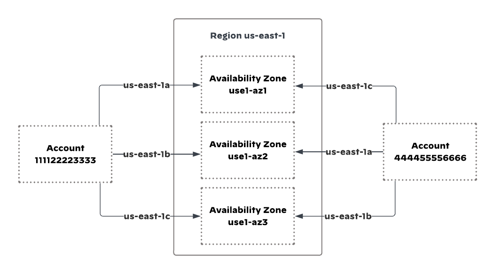
Cross-account endpoint sharing. In the Combined and Isolated models, Cloud NGFW runs in a dedicated security account while NGFW endpoints are placed in spoke VPCs that may reside in separate AWS accounts. The Cloud NGFW resource owner shares the GWLB service via AWS PrivateLink, and spoke account administrators create GWLB endpoints referencing the shared service name.
Multi-account architecture, with Cloud NGFW in a security account and cross-account endpoints in spoke VPCs:
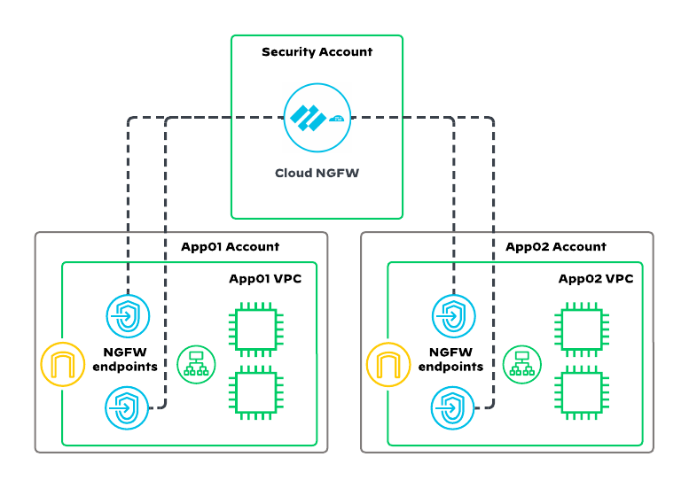
The Combined model uses a hub-and-spoke topology with AWS Transit Gateway at the center. East-west and outbound traffic routes through a centralized security VPC, while inbound traffic enters each spoke VPC directly and is inspected by cross-account NGFW endpoints before reaching application workloads.
This model deploys two logical Cloud NGFW resources:
- An East-West & Outbound NGFW in the centralized security VPC — inspects all inter-VPC and internet-bound traffic.
- An Inbound NGFW with cross-account endpoints placed in each spoke VPC — inspects traffic arriving from the internet before it reaches the application load balancer.
High-level architecture of the Combined Design:
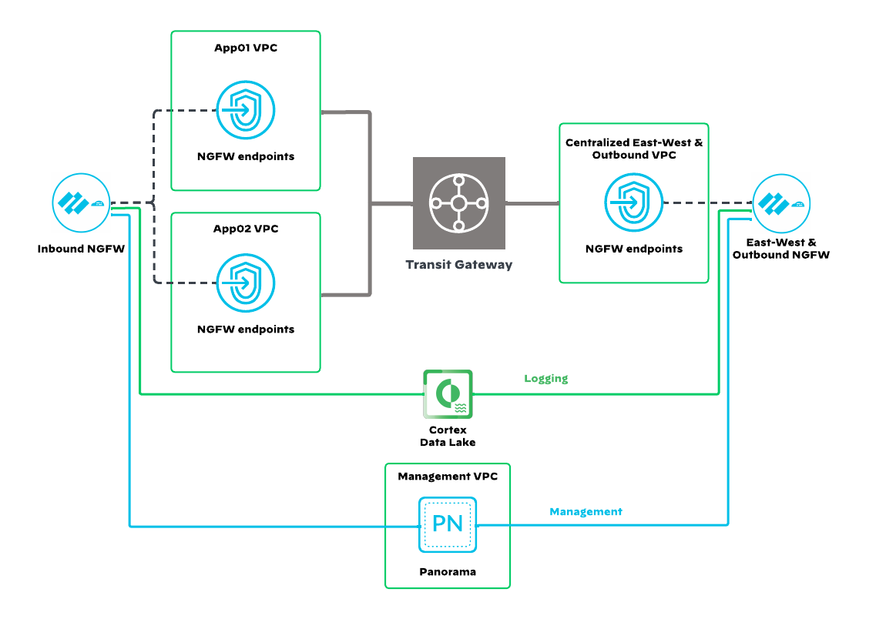
Key Components
| Component | Location | Purpose |
|---|---|---|
| Transit Gateway | Central hub | Interconnects all VPCs; routes east-west and outbound traffic to security VPC |
| Security VPC | Dedicated VPC (10.107.0.0/16) | Hosts NGFW endpoints, NAT gateway, and IGW for outbound |
| Spoke VPCs | App01 (10.104.0.0/16), App02 (10.105.0.0/16) | Host application workloads, ELBs, and inbound NGFW endpoints |
| NGFW Endpoints (security VPC) | One per AZ in security VPC | GWLB endpoints for east-west and outbound inspection |
| NGFW Endpoints (spoke VPCs) | One per AZ in each spoke VPC | Cross-account GWLB endpoints for inbound inspection |
| NAT Gateway | One per AZ in security VPC | Translates private IPs to public EIPs for outbound traffic |
TGW Route Table Design
Two TGW route tables isolate traffic domains:
| Route Table | Associated Attachments | Key Routes |
|---|---|---|
| Spokes | App01, App02 | 0.0.0.0/0 → Security VPC attachment |
| Security | Security-EW-Outbound | Propagated routes from all spoke VPCs |
Enable Appliance Mode on the security VPC TGW attachment. Without it, return traffic may cross AZ boundaries and break flow symmetry, causing packet drops.
Inbound Traffic Flow (Combined)
- Client sends a request to the application's public DNS name. DNS resolves to the EIP of the internet-facing ELB in the spoke VPC.
- The IGW edge association route table directs traffic to the inbound NGFW endpoint in the ELB's AZ.
- The NGFW endpoint tunnels traffic via GWLB to the Inbound Cloud NGFW for inspection.
- If allowed, the NGFW returns the packet to the NGFW endpoint.
- The NGFW endpoint subnet route table forwards traffic to the ELB's private IP.
- The ELB distributes the request to healthy EC2 targets.
Combined inbound traffic flow:
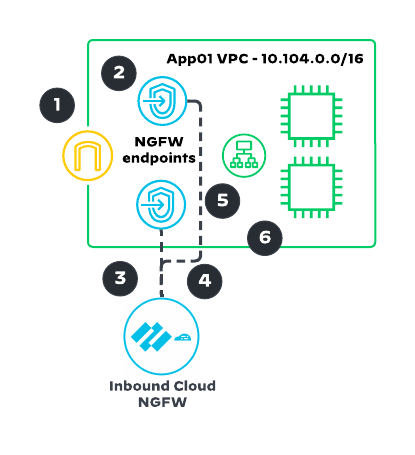
Combined inbound return path:
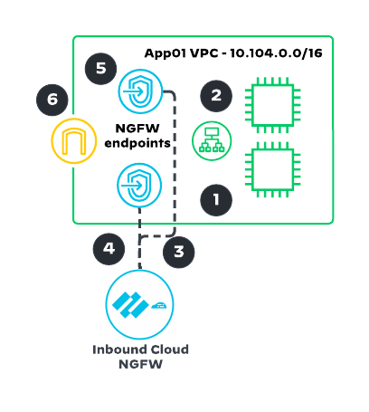
Outbound Traffic Flow (Combined)
- An instance in a spoke VPC sends traffic to the internet. The instance subnet route table directs it to the TGW attachment.
- The TGW spokes route table matches the default route and forwards to the security VPC attachment.
- The TGW subnet route table in the security VPC forwards to the NGFW endpoint in the same AZ.
- The NGFW endpoint tunnels traffic to the East-West & Outbound Cloud NGFW for inspection.
- If allowed, the NGFW returns the packet to the NGFW endpoint.
- The NGFW endpoint subnet route table forwards internet-bound traffic to the NAT gateway.
- The NAT gateway translates the source IP to its public EIP.
- The IGW sends the packet to the internet.
Combined outbound traffic flow:
Combined outbound return path:
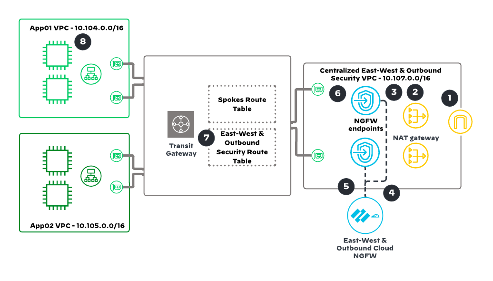
East-West Traffic Flow (Combined)
- An instance in App01 VPC sends traffic to an instance in App02 VPC. The instance subnet route table directs it to the TGW attachment.
- The TGW spokes route table forwards to the security VPC attachment (no direct spoke-to-spoke routes exist).
- The TGW subnet route table in the security VPC forwards to the NGFW endpoint.
- The NGFW endpoint tunnels traffic to the East-West & Outbound Cloud NGFW for inspection.
- If allowed, the NGFW returns the packet to the NGFW endpoint.
- The NGFW endpoint subnet route table matches the App02 CIDR and forwards to the TGW attachment.
- The TGW security route table forwards to the App02 VPC attachment.
- The TGW attachment in App02 delivers the packet to the destination instance.
Combined east-west traffic flow:
Combined east-west return path:
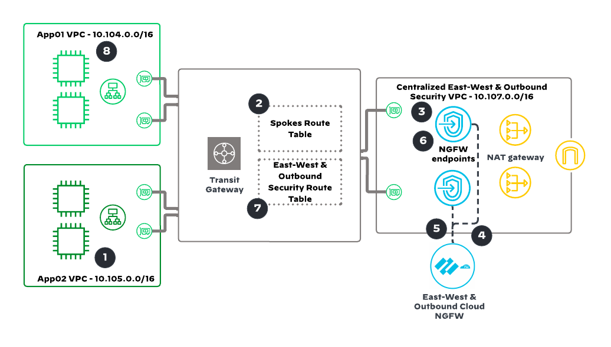
Route Tables (Combined Model)
Spoke VPC Route Tables (App01 shown; App02 identical):
| Route Table | Destination | Target |
|---|---|---|
| App01 Instance Subnet | 0.0.0.0/0 | TGW |
| App01 ELB-a Subnet | 0.0.0.0/0 | GWLBE-a (inbound) |
| App01 ELB-b Subnet | 0.0.0.0/0 | GWLBE-b (inbound) |
| App01 GWLBE Subnet | 0.0.0.0/0 | IGW |
| App01 IGW (edge assoc.) | 10.104.7.0/24 | GWLBE-a |
| App01 IGW (edge assoc.) | 10.104.8.0/24 | GWLBE-b |
Security VPC Route Tables:
| Route Table | Destination | Target |
|---|---|---|
| TGW-a Subnet | 0.0.0.0/0 | GWLBE-a |
| TGW-a Subnet | 10.0.0.0/8 | GWLBE-a |
| GWLBE-a Subnet | 0.0.0.0/0 | NATGW-a |
| GWLBE-a Subnet | 10.0.0.0/8 | TGW |
| NATGW-a Subnet | 0.0.0.0/0 | IGW |
| NATGW-a Subnet | 10.0.0.0/8 | GWLBE-a |
AZ-b route tables mirror AZ-a with corresponding -b endpoints.
Complete Combined Design architecture with all route tables and endpoints:
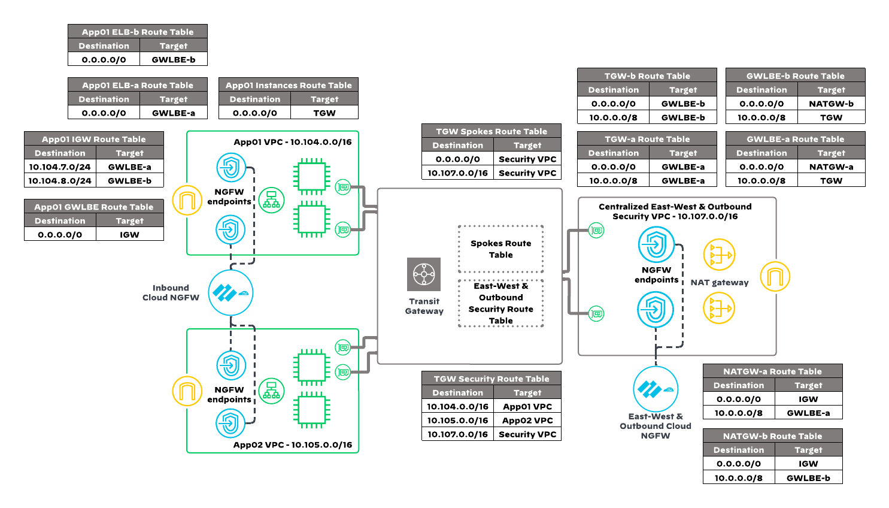
Combined Design TGW attachments and route table associations:
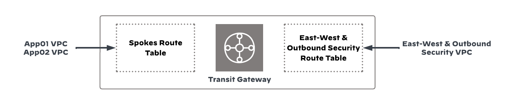
Confirm understanding of the Combined model before proceeding. The security VPC handles east-west and outbound traffic via TGW. Each spoke VPC handles its own inbound traffic via cross-account NGFW endpoints. Two separate Cloud NGFW resources are deployed.
The Centralized model routes all traffic flows (inbound, outbound, and east-west) through dedicated security VPCs connected via Transit Gateway. No NGFW endpoints are placed in spoke VPCs.
This model deploys two security VPCs:
- An East-West & Outbound Security VPC with NGFW endpoints, NAT gateways, and IGW.
- A Centralized Inbound Security VPC with NGFW endpoints and an internet-facing ELB that accepts all inbound traffic.
High-level architecture of the Centralized Design:
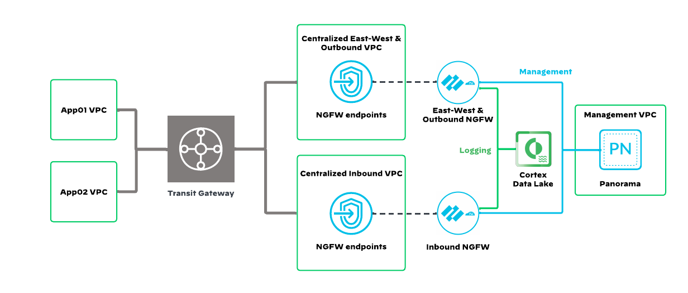
When to Use Centralized
- Regulatory requirements mandate that inbound traffic is inspected outside the application VPC.
- A single ingress point is preferred for all applications.
- Fewer Cloud NGFW resources to manage (one per traffic direction, not one per spoke).
TGW Route Tables
Three TGW route tables are used:
| Route Table | Associated Attachments | Key Routes |
|---|---|---|
| Spokes | App01, App02 | 0.0.0.0/0 → EW&O Security VPC; 10.106.0.0/16 → Inbound Security VPC |
| EW&O Security | Security-EW-Outbound | Propagated routes from all spokes + self |
| Inbound Security | Inbound Security VPC | Propagated routes from all spokes + self |
Inbound Traffic Flow (Centralized)
- Client sends a request to the application's public DNS name. DNS resolves to the EIP of the internet-facing ELB in the inbound security VPC.
- The ELB listener selects a target from the target group (private IPs in spoke VPCs) and forwards the request.
- The ELB subnet route table directs traffic to the NGFW endpoint.
- The NGFW endpoint tunnels traffic to the Inbound Cloud NGFW for inspection.
- If allowed, the NGFW returns the packet to the NGFW endpoint.
- The NGFW endpoint subnet route table forwards to the TGW attachment.
- The TGW inbound security route table forwards to the spoke VPC attachment.
- The spoke VPC TGW attachment delivers the packet to the instance or internal ELB.
Centralized inbound traffic flow:
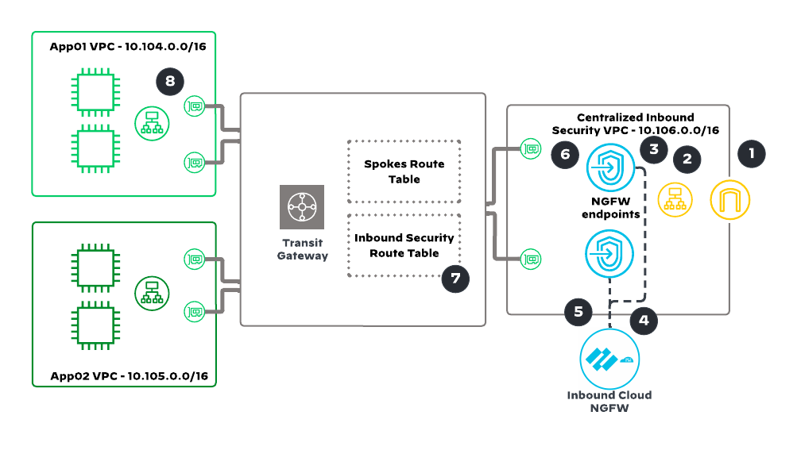
Centralized inbound return path:
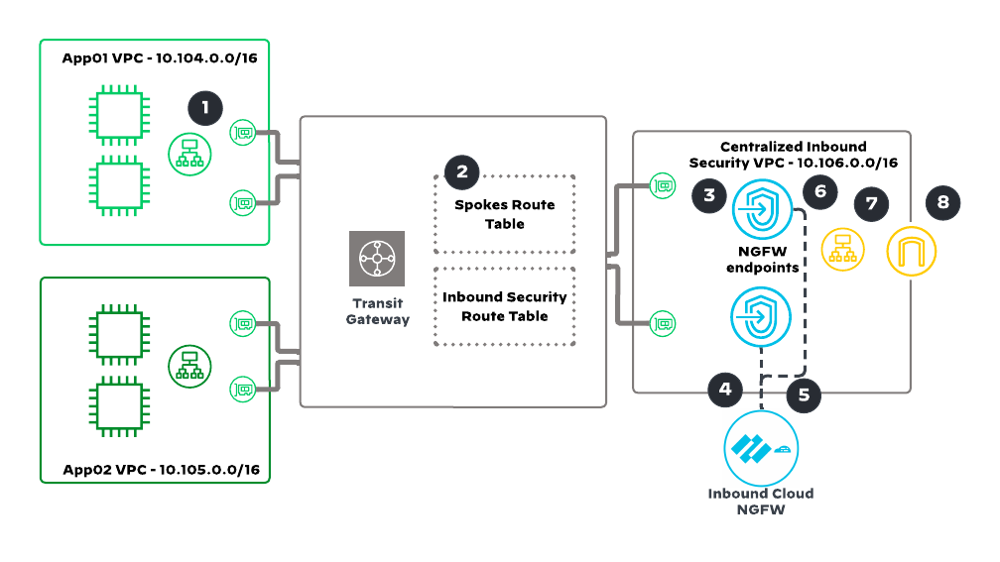
Centralized inbound inspection supports only TCP traffic with IP address targets in the ELB target group. UDP-based or non-ELB inbound workloads require the Combined model instead.
Outbound and east-west traffic flows are identical to the Combined model: they route through the centralized East-West & Outbound security VPC via TGW.
Centralized outbound traffic flow:
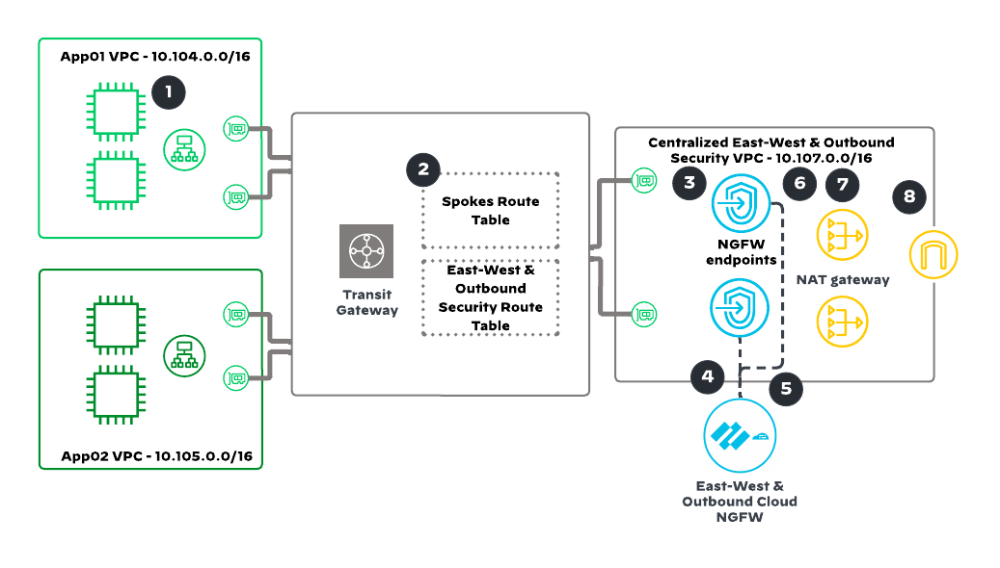
Centralized outbound return path:
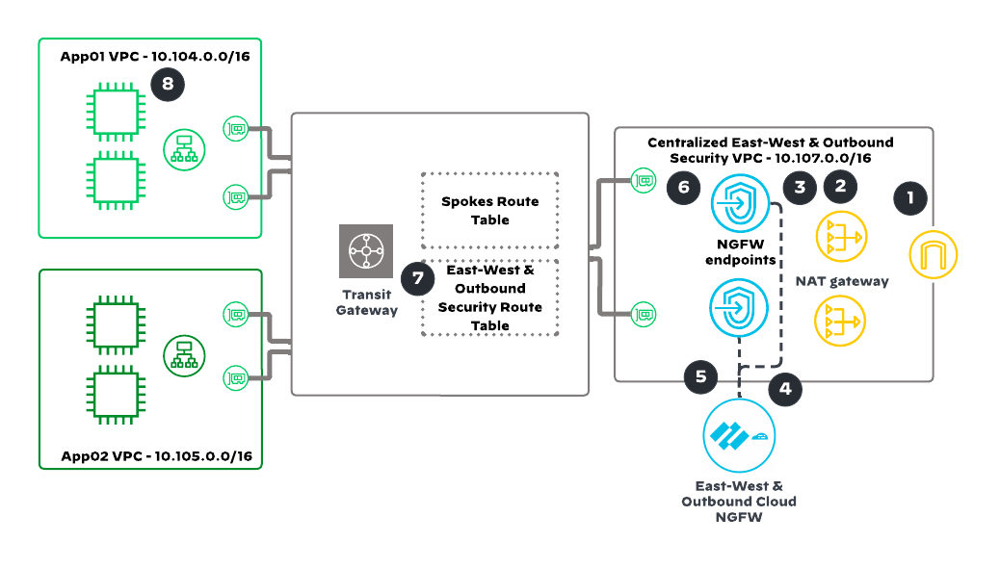
Centralized east-west traffic flow:
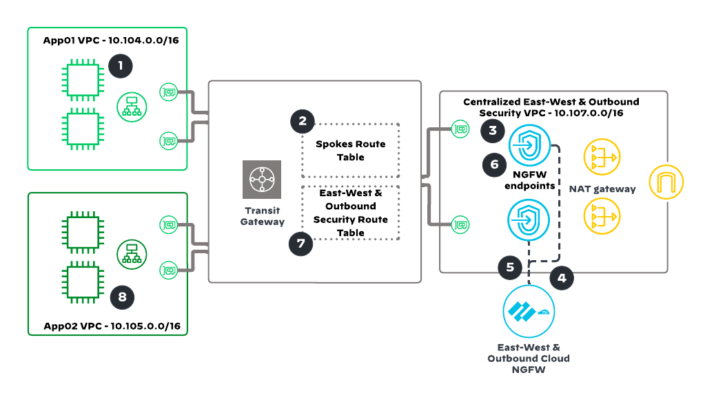
Centralized east-west return path:
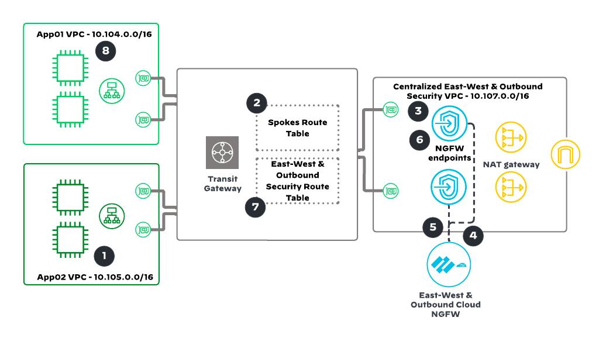
Complete Centralized Design architecture with all route tables and endpoints:
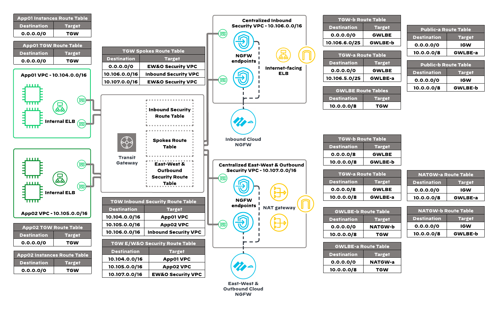
Centralized Design TGW attachments and route table associations:
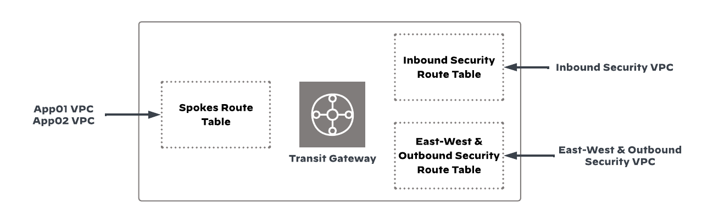
Confirm the distinction: in the Centralized model, inbound traffic enters at the security VPC's ELB, not at the spoke VPC. The Combined model's inbound traffic enters at each spoke VPC's own IGW and ELB.
In the Distributed model, each VPC that requires protection deploys its own NGFW endpoints. No Transit Gateway is required. This is the simplest model to deploy but does not provide cross-VPC (east-west) inspection between separate VPCs.
Three traffic patterns are supported within a single VPC:
Distributed East-West (Intra-VPC)
Traffic between subnets within the same VPC routes through NGFW endpoints placed in a firewall subnet. Subnet route tables direct inter-subnet traffic to the endpoint.
- Traffic from the source subnet routes to the NGFW endpoint.
- The NGFW endpoint tunnels traffic to the Cloud NGFW for inspection.
- If allowed, the NGFW returns the packet to the NGFW endpoint, which delivers it to the destination subnet.
Distributed Outbound
Outbound internet traffic from a private subnet routes through the NGFW endpoint before reaching the NAT gateway and IGW.
- Traffic from the private subnet routes to the NGFW endpoint.
- The NGFW inspects and, if allowed, returns traffic to the NGFW endpoint.
- The firewall subnet route table forwards to the NAT gateway.
- The NAT gateway forwards through the IGW to the internet.
Distributed Inbound
Inbound traffic from the internet enters via the IGW, hits the NGFW endpoint (via IGW edge association route table), is inspected, then forwarded to an ALB and ultimately to application instances.
- Traffic arrives at the IGW, which routes to the NGFW endpoint.
- The NGFW inspects and, if allowed, returns traffic to the NGFW endpoint.
- The endpoint routes to the ALB, which forwards to application targets.
The Distributed model is per-VPC, no-TGW. Each protected VPC has its own NGFW and endpoints. East-west inspection is intra-VPC only (between subnets), not between separate VPCs.
The Isolated model shares a single Cloud NGFW resource across multiple standalone VPCs using cross-account NGFW endpoints, without a Transit Gateway. Each VPC operates independently with its own IGW, NAT gateway, and NGFW endpoints.
This model is ideal when:
- VPCs do not need east-west connectivity between each other.
- Consolidating NGFW resources reduces cost and management overhead.
- VPCs span multiple AWS accounts but share a common Cloud NGFW tenant.
Isolated Inbound Flow
- The IGW forwards traffic to the ALB.
- The ALB subnet route table directs target-group traffic to the inbound NGFW endpoint.
- The NGFW inspects and, if allowed, returns traffic to the endpoint.
- The firewall subnet route table delivers traffic to the application instances.
Isolated Outbound Flow
- EC2 instance traffic routes to the egress NGFW endpoint.
- The NGFW inspects and, if allowed, returns traffic to the endpoint.
- The firewall subnet route table forwards to the NAT gateway.
- The NAT gateway sends through the IGW to the internet.
The Isolated model has no TGW and no east-west traffic between VPCs. Each VPC has its own endpoints pointing to a shared Cloud NGFW resource. Separate inbound and outbound NGFW endpoints may reside in different firewall subnets.
AWS Cloud WAN replaces Transit Gateway as the network backbone. VPCs attach directly to a Cloud WAN core network organized into segments (e.g., ProdSegment, SecuritySegment). The security VPC containing the Cloud NGFW attaches to the security segment, and routing policies steer traffic through it.
Cloud NGFW should be deployed in every AWS region that the Cloud WAN spans to maintain low-latency inspection and regional cost optimization.
Deployment Approaches
- Federated TGW + Cloud WAN — Replace TGW peering with Cloud WAN while keeping existing TGW attachments. Use this when migrating from TGW.
- Cloud WAN only — All VPCs connect directly to Cloud WAN. TGW is removed entirely.
East-West Packet Walkthrough (Cloud WAN)
- App VPC 1 sends traffic to App VPC 2. The VPC route table has a default route to the Cloud WAN Core Network ARN.
- The core network performs a prod segment route table lookup. The default route points to the security VPC attachment.
- Traffic arrives at the security VPC's Cloud WAN subnet. The route table forwards to the NGFW endpoint.
- The NGFW inspects the traffic. If allowed, it returns to the NGFW endpoint.
- The firewall subnet route table has a default route back to the Core Network ARN.
- The core network performs a security segment route table lookup. The App VPC 2 CIDR matches a static route, and traffic forwards to App VPC 2.
- App VPC 2 receives the traffic via its Cloud WAN subnet.
- TGW-to-Cloud-WAN peering is supported only within the same region, not across regions.
- The Cloud WAN core network ASN must differ from any TGW ASNs in the same environment.
- Enable appliance mode on the security VPC attachment to maintain flow symmetry.
Cloud WAN replaces TGW as the hub. VPC route tables point to a Core Network ARN instead of a TGW ENI. Segment route tables and sharing policies control which traffic reaches the security VPC for inspection.
Phase 1: Prerequisites
Complete these prerequisites before configuring any management platform or deploying infrastructure. Each step ends with a verification check; do not proceed until every check passes.
Cloud NGFW for AWS requires specific AWS account privileges and IAM roles. The CloudFormation template launched during subscription creates four cross-account IAM roles that Palo Alto Networks uses to manage NGFW endpoints, logging, and secrets.
- Sign in to the AWS Management Console with an account that has administrator-level IAM privileges.
- Navigate to
Services→Security, Identity & Compliance→IAM. - Click
Access management→Roles. - Search for
PaloAltoNetworks. - Confirm four roles exist:
PaloAltoNetworksCrossAcco-CustomNotificationLambdaPaloAltoNetworksCrossAcco-ServiceManagedEndpointRoPaloAltoNetworksCrossAccountRoleSet-DecryptionRolePaloAltoNetworksCrossAccountRoleSetu-LogMetricRole
For the Combined model with cross-account NGFW endpoints, a second AWS account associated with the same AWS organization is required. Add the second account to the Cloud NGFW tenant after subscription. Deploy spoke VPCs (App01, App02) on the second account and the security VPC on the subscription (first) account.
Four PaloAltoNetworks* IAM roles are visible in the IAM Roles list. Each role has a trust policy referencing a Palo Alto Networks-controlled AWS account.
An active AWS Marketplace subscription creates the Cloud NGFW tenant and grants access to the Cloud NGFW console, where NGFW resources and security configuration are managed.
- In the AWS console, navigate to
Services→AWS Marketplace Subscriptions. - Click
Discover products. - Search for
Palo Alto Networks Cloud Next-Generation Firewall. - Select
Cloud Next-Generation Firewall (PAYG with 15-Day Free Trial). - Review the product overview, then click
View purchase options. - Click
Subscribe. - Click
Set up your account. - Review the AWS permissions listed in step 1 of the setup page.
- Click
Login or create vendor account. - Under Create Tenant, enter an email address, first name, and last name, then click
Create. - Check email for a temporary password. Log in and set a new password.
- On the third step of the setup page, click
Launch templateto create the CloudFormation stack with cross-account IAM roles. - In CloudFormation, click
Create stackand wait forCREATE_COMPLETE. - Return to the AWS Marketplace setup page and click
Launch product. - Bookmark the Cloud NGFW console URL.
- Log in with the email and password from step 10 and complete the company profile.
The email address used to create the tenant becomes the first tenant administrator. Subsequent users invited to the tenant must have email addresses with the same domain. This email must also be a registered user in the Palo Alto Networks Customer Support Portal (CSP) under the account where Panorama licenses are held.
The Cloud NGFW console loads and displays the tenant dashboard after login. The CloudFormation stack shows CREATE_COMPLETE status in the AWS CloudFormation console.
Audit logging captures administrative activity within the Cloud NGFW tenant (configuration changes, user logins, NGFW create/delete events). Configure a CloudWatch Log Group to receive these logs.
- In the AWS console, navigate to
Services→CloudWatch. - Click
Logs→Log groups→Create log group. - Set Log group name to
PaloAltoCloudNGFWAuditLog. - Select a retention period that meets organizational log storage requirements.
- Click
Create. - Click the
PaloAltoCloudNGFWAuditLoglog group and copy the ARN from the details pane. - Log in to the Cloud NGFW Console.
- Navigate to
Tenantin the left menu. - In the Audit Log Settings section, click
Edit. - Select
CloudWatch. - Paste the Log Group ARN copied in step 6.
- Click
Save.
The Audit Log Settings section in the Cloud NGFW console shows CloudWatch as the destination with the correct Log Group ARN. In CloudWatch, the log group exists and shows recent audit entries after any console action.
This guide deploys all AWS infrastructure with Terraform using the official Palo Alto Networks SWFW modules. Set up your deployment environment using one of the options below.
Option A: Local Workstation or Bastion Host (Preferred)
Install the following tools on your deployment machine. This is the recommended approach: it gives you full control over tool versions, persistent state, and IDE integration.
| Tool | Purpose | Install |
|---|---|---|
| Terraform CLI | Infrastructure provisioning | developer.hashicorp.com/terraform/install |
| AWS CLI | AWS authentication and resource management | docs.aws.amazon.com/.../getting-started-install |
| Git | Version control for Terraform code | git-scm.com/downloads |
| VS Code (recommended) | HCL syntax highlighting, Terraform extension | code.visualstudio.com/download |
Install via Homebrew (recommended):
brew tap hashicorp/tap
brew install hashicorp/tap/terraformRun the command below and confirm it prints the installed Terraform version. The version must be v1.5.0 or later.
terraform -vInstall via winget (recommended):
winget install Hashicorp.TerraformOr download the binary manually from developer.hashicorp.com/terraform/install. Extract the .zip, place terraform.exe in a directory on your PATH (e.g., C:\tools\terraform), and add that directory to your system PATH environment variable.
Open a new terminal so the updated PATH is loaded, then run the command below. It should print the installed Terraform version, which must be v1.5.0 or later.
terraform -vGit is included with the Xcode Command Line Tools. Install them if you haven't already:
xcode-select --installOr install via Homebrew:
brew install gitRun the command below and confirm it prints an installed Git version (e.g., git version 2.x.x).
git --versionDownload the installer from git-scm.com/downloads/win and run it. Accept the defaults; the installer includes Git Bash, which provides a Bash-compatible shell on Windows.
Open a new terminal, then run the command below. It should print an installed Git version (e.g., git version 2.x.x).
git --versionInstall via Homebrew:
brew install --cask visual-studio-codeOr download the .dmg from code.visualstudio.com/download and drag it to Applications.
Install via winget:
winget install Microsoft.VisualStudioCodeOr download the installer from code.visualstudio.com/download and run it.
After installing, open VS Code and install the HashiCorp Terraform extension from the Extensions marketplace (Ctrl+Shift+X / Cmd+Shift+X → search "HashiCorp Terraform"). This provides HCL syntax highlighting, autocompletion, and format-on-save.
VS Code launches, and the HashiCorp Terraform extension shows an Installed status in the Extensions view. Opening any .tf file displays HCL syntax highlighting.
Confirm all tools are installed and your AWS identity is correct:
terraform -v
aws --version
git --version
aws sts get-caller-identityAll shell commands in this guide use Bash syntax (Linux/macOS). If you are deploying from a Windows workstation, use one of the following approaches:
- Windows Subsystem for Linux (WSL) — Recommended: Install WSL 2 with Ubuntu, then install Terraform, AWS CLI, and Git inside the WSL environment. All commands in this guide work as-is.
- Git Bash: Installed alongside Git for Windows. Provides a Bash-compatible shell where most commands work without modification.
- PowerShell: Terraform and AWS CLI work natively, but shell syntax differs. See the table below for common translations.
If you choose to use PowerShell instead of WSL or Git Bash, translate shell commands as follows:
| Bash (this guide) | PowerShell equivalent |
|---|---|
export VAR="value" | $env:VAR = "value" |
echo $VAR | $env:VAR |
curl -Lo file URL | Invoke-WebRequest -Uri URL -OutFile file |
unzip file.zip | Expand-Archive -Path file.zip -DestinationPath . |
cat << 'EOF' > file | Use notepad file or VS Code instead |
chmod 400 key.pem | icacls key.pem /inheritance:r /grant:r "$($env:USERNAME):(R)" |
ssh -i key.pem user@host | Same syntax (OpenSSH is built into Windows 10+) |
Line continuation: \ | Line continuation: ` (backtick) |
Option B: AWS CloudShell (Quick Alternative)
CloudShell automatically assumes the IAM permissions of the logged-in console user, so there are no credentials to configure. Use this if you need to get started quickly without installing anything locally.
- Open CloudShell from the AWS Console.
- Install Terraform:
sudo yum install -y yum-utils
sudo yum-config-manager --add-repo https://rpm.releases.hashicorp.com/AmazonLinux/hashicorp.repo
sudo yum -y install terraform
terraform -vTerraform installed via yum is lost when CloudShell times out. If you return and terraform is not found, reinstall it using the commands above.
The Terraform deployment in Phases 4-5 requires specific provider versions. Install them now to surface any version conflicts before infrastructure work begins.
The Cloud NGFW Combined Design example requires:
- Terraform ≥
1.5.0 - AWS Provider
~> 5.17 - Cloud NGFW Provider (
cloudngfwaws)~> 2.0
cloudngfwaws~> 2.0— the provider has since released a 4.x line with breaking schema changes. The HCL in this guide targets the 2.x series, so the pin preventsterraform initfrom resolving to an incompatible major version.aws~> 5.17— the AWS provider 6.x line is current; this pin targets the 5.x series that the swfw-modules examples were validated against.
- Confirm the Terraform CLI version:
The output must show
terraform versionv1.5.0or later. - Create a
versions.tffile (or verify an existing one) with the required provider blocks:terraform { required_version = ">= 1.5.0" required_providers { aws = { source = "hashicorp/aws" version = "~> 5.17" } cloudngfwaws = { source = "PaloAltoNetworks/cloudngfwaws" version = "~> 2.0" } } } - Run
terraform initin a scratch directory to confirm both providers download without errors:terraform init
terraform init completes with Terraform has been successfully initialized!. Both the hashicorp/aws and PaloAltoNetworks/cloudngfwaws providers appear in the .terraform.lock.hcl file.
Phase 2: Management Platform Configuration
All security policy, device groups, templates, and log forwarding are configured on the management platform before any AWS infrastructure is deployed. This management-first approach ensures that Cloud NGFW resources bootstrap into a fully configured policy on creation.
Cloud NGFW supports three management methods. Select the tab that matches your environment; the selection persists across the page.
- Panorama — Centralized management with device groups, template stacks, Cortex Data Lake logging, and advanced features (DAGs, DNS Security, WildFire, custom App-IDs). Required for multi-platform environments managing PA-Series, VM-Series, and Cloud NGFW from a single pane.
- SCM (Strata Cloud Manager) — Cloud-native management with folder-based policy organization. Suitable for cloud-first environments standardizing on SCM.
Cloud NGFW also supports local rulestacks managed directly through the Cloud NGFW console, Terraform, or CloudFormation. Local rulestacks are suitable for proof-of-concept or small deployments. This guide does not cover local rulestack configuration in detail; refer to Cloud NGFW Rules and Rulestacks in TechDocs.
Confirm that Panorama meets the minimum requirements for Cloud NGFW integration. Panorama must already be deployed with Cortex Data Lake logging configured.
- Log in to Panorama and click the
Dashboardtab. - In the General Information pane, confirm:
Setting Required Value System Mode management-onlySoftware Version 10.2.5or laterDevice Certificate Valid - Click the
Panoramatab. - Navigate to
Cloud Services→Status. - Confirm Cortex Data Lake status shows
OK. - Click
detailsand note the Customer ID (this is the Cortex Data Lake tenant ID). - Log in to Cortex Data Lake separately. Navigate to
Dashboard→License Informationand confirm the Instance (Tenant) ID matches the Customer ID from step 6.
Panorama is running PAN-OS 10.2.5+ in management-only mode with a valid device certificate. Cortex Data Lake status is OK and the tenant IDs match.
The Panorama management plane pushes policy and configuration to Cloud NGFW resources in the AWS VPC:
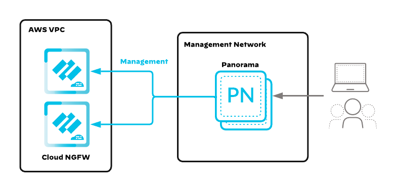
The Cloud Connector plugin enables Panorama to integrate with Cloud NGFW tenants for centralized policy management.
- In Panorama, click the
Panoramatab. - In the left menu, click
Plugins. - Click
Check Nowin the bottom-left corner. - Search for
cloudconnector. - Download and install
cloudconnector-2.0.1(or later).
The Plugins page shows cloudconnector with status Installed. The plugin version is 2.0.1 or later.
Linking the Cloud NGFW tenant to Panorama enables centralized policy push and Cortex Data Lake log collection. This integration may take 10-20 minutes to complete.
- Log in to the Cloud NGFW console with a tenant administrator account.
- Navigate to
Settings→Integrations. - Click
Add Panoramain the top-right corner. - Set Link Name to
Panorama. - In the Primary Panorama Serial Number list, select the Panorama appliance.
- Click
Continue.
The email address used to create the Cloud NGFW tenant must be a registered user in the Palo Alto Networks Customer Support Portal (CSP) under the same support account where the Panorama serial number is registered. If the email is not listed, add it via Manage Users in the CSP portal before proceeding.
The Integrations page in the Cloud NGFW console shows the Panorama link with status Connected. In Panorama, the Cloud NGFW tenant appears under the Panorama tab when selecting the tenant and region.
With Cortex Data Lake, Panorama manages Cloud NGFW policy while CDL collects traffic logs:
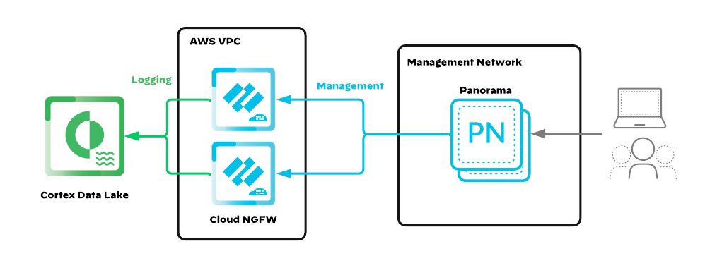
Device groups and template stacks organize policy and network configuration for Cloud NGFW resources. Create one device group per NGFW function (east-west/outbound and inbound).
- In Panorama, click the
Panoramatab. - Select the Cloud NGFW tenant and the target region (e.g.,
us-east-1). - In the left menu, click
Cloud Device Groups. - Click
Add. - In the Template Stack list, click
New Template Stack. Entereast-west-outboundand clickCreate. - In the Cloud Device Group list, click
New Device Group. Entereast-west-outboundand clickCreate. - Click
OK. - Click
Commit→Commit and Push. - Click
Edit Selections, select theCloud NGFWtab, checkcngfw-aws-east-west-outbound, clickOK, thenCommit and Push. - Repeat steps 4-9 for the inbound NGFW:
- Template Stack name:
combined-inbound(Combined model) orcentralized-inbound(Centralized model) - Device Group name: match the template stack name
- Template Stack name:
The Cloud Device Groups page shows two entries (e.g., east-west-outbound and combined-inbound). Each has a corresponding template stack. The commit-and-push operation completes without errors.
Create security rules in each device group to define allowed and denied traffic. Cloud NGFW evaluates rules in the global rulestack (pushed by Panorama) top-to-bottom.
- In Panorama, navigate to
Policies→Security. - Select the
east-west-outbounddevice group from the device group dropdown. - Click
Addto create a new security rule. - Configure the rule with the following fields at minimum:
Tab Field Value General Name allow-outbound-webSource Source Zone anySource Source Address 10.104.0.0/16,10.105.0.0/16Destination Destination Zone anyDestination Destination Address anyApplication Application ssl,web-browsingActions Action AllowActions Log at Session End Checked - Add additional rules as required for east-west traffic between spoke VPCs.
- Ensure a deny-all rule exists at the bottom of the rulebase to enforce explicit allow.
- Repeat for the
combined-inbound(orcentralized-inbound) device group with rules appropriate for inbound application traffic. - Click
Commit→Commit and Pushto push to the Cloud NGFW tenant.
Cloud NGFW does not use traditional PAN-OS zones. Set both source and destination zones to any. Differentiate traffic flows using source and destination IP address ranges (e.g., 10.104.0.0/16 for App01, 10.105.0.0/16 for App02). See Understanding Security Zones for a full cross-cloud comparison.
The security policy rulebase for each device group contains at least one allow rule and a final deny-all rule. The commit-and-push operation completes without errors. The Cloud NGFW console shows the global rulestack associated with the NGFW resource (after the NGFW is created in Phase 5).
When managed by Panorama, Cloud NGFW sends traffic logs to Cortex Data Lake. Configure log forwarding profiles in each device group to ensure all traffic is logged.
- In Panorama, navigate to
Objects→Log Forwarding. - Select the
east-west-outbounddevice group. - Click
Addto create a new log forwarding profile. - Set Name to
default. - Add log type match entries for
traffic,threat,url, anddata. - For each match entry, select
Cortex Data Lakeas the forwarding destination. - Click
OK. - Repeat for the inbound device group.
- Attach the log forwarding profile to each security rule: edit the rule, go to the
Actionstab, and select thedefaultlog forwarding profile. - Click
Commit→Commit and Push.
Naming the log forwarding profile exactly default (lowercase) causes PAN-OS to auto-attach it to new security rules created in this device group. This is case-sensitive and not retroactive; existing rules without a log forwarding profile must be updated manually.
A log forwarding profile named default exists in each device group. Every security rule shows the log forwarding profile attached in the Actions column. Commit-and-push completes without errors.
Confirm that your Strata Cloud Manager (SCM) tenant is activated and has the correct license tier before linking Cloud NGFW resources.
- Sign in to Strata Cloud Manager with a tenant administrator account.
- Navigate to
Settings→Tenant Management. - Confirm the following:
Setting Required Value License Tier Strata Cloud Manager EssentialsorProStrata Logging Service Active(included with Pro; optional add-on for Essentials)Tenant Status Active - Note the Tenant ID — you will need this when configuring the Cloud NGFW resource in Phase 4.
Cloud NGFW for AWS automatically enables SCM Pro features when registered with an SCM tenant. This includes Strata Logging Service with one year retention, Command Center dashboards, and Activity Insights; no separate license purchase is required for these Cloud NGFW-specific capabilities.
The SCM tenant shows Active status. Strata Logging Service is active. You have recorded the Tenant ID for use in Phase 4.
Link the Cloud NGFW for AWS tenant to SCM so that SCM becomes the centralized policy manager. This replaces the need for Panorama and the Cloud Connector plugin.
- Log in to the Cloud NGFW console with a tenant administrator account.
- Navigate to
Settings→Management. - Select Strata Cloud Manager as the policy manager.
- Authenticate with your SCM tenant credentials when prompted.
- Select the SCM tenant to link and click
Confirm. - Wait for the integration to complete (typically 2–5 minutes).
The email used to create the Cloud NGFW tenant must be a registered user in the Palo Alto Networks Customer Support Portal (CSP) under the same support account as the SCM tenant. If it is not listed, add it via Manage Users in the CSP portal before proceeding.
The Management page in the Cloud NGFW console shows Strata Cloud Manager with status Connected. In SCM, the Cloud NGFW tenant appears under managed resources.
SCM uses a hierarchical folder structure to organize policy; this is the SCM equivalent of Panorama device groups. Folders support up to four levels of nesting, and child folders inherit rules from their parents. Create a folder for the AWS Cloud NGFW deployment with sub-folders to separate traffic policies.
- In SCM, navigate to
Manage→Configuration→NGFW and Prisma Access. - In the Configuration Scope dropdown, click
Manage Folders. - Click
Add Folder. - Set Name to
Cloud-NGFW-AWSand select the appropriate parent folder (e.g.,All). - Click
Save. - Create two sub-folders under
Cloud-NGFW-AWS:Sub-Folder Name Purpose East-West-OutboundPolicies for spoke-to-spoke and spoke-to-internet traffic InboundPolicies for internet-to-application inbound traffic
SCM folders serve the same organizational role as Panorama device groups. Rules defined at the parent folder level act as pre-rules (evaluated first) for all child folders. Use the parent Cloud-NGFW-AWS folder for shared objects like address groups and security profiles, and the sub-folders for traffic-specific rules.
The Configuration Scope dropdown shows Cloud-NGFW-AWS with two sub-folders. Selecting each sub-folder shows an empty policy rulebase ready for configuration.
Security profiles enable Cloud NGFW to inspect traffic for threats beyond basic allow/deny. Create profiles for each threat type, then bundle them into a Security Profile Group for easy attachment to rules.
Create Security Profiles
- In SCM, select the
Cloud-NGFW-AWSparent folder from the Configuration Scope dropdown. - Navigate to
Manage→Configuration→NGFW and Prisma Access→Security Services. - Create the following profiles (use predefined
Strictprofiles for initial deployment, or create custom ones):Profile Type Name Recommended Setting Anti-Spyware strict-antispywareBlock critical/high/medium; alert on low Vulnerability Protection strict-vulnerabilityBlock critical/high; alert on medium/low URL Filtering strict-urlBlock high-risk categories (malware, phishing, C2) WildFire Analysis strict-wildfireForward all file types for analysis
Create Security Profile Group
- Navigate to
Security Services→Security Profile Groups. - Click
Add. - Set Name to
cloud-ngfw-protection. - Attach each profile created above:
Field Value Anti-Spyware strict-antispywareVulnerability Protection strict-vulnerabilityURL Filtering strict-urlWildFire Analysis strict-wildfire - Click
Save.
SCM includes predefined Default and Strict profiles. For production deployments, the Strict profiles provide a strong security baseline. Create custom profiles only if you need to tune actions for specific threat signatures or URL categories.
Four security profiles appear under Security Services in the Cloud-NGFW-AWS folder. The cloud-ngfw-protection profile group lists all four profiles. These objects are defined at the parent folder level and will be available to both sub-folders.
Create security rules in each sub-folder to define allowed and denied traffic, with the security profile group attached for threat inspection.
East-West and Outbound Rules
- In SCM, select the
East-West-Outboundfolder from the Configuration Scope dropdown. - Navigate to
Security Services→Security Policy. - Click
Add Ruleand configure an outbound allow rule:Field Value Name allow-outbound-webSource Zone anySource Address 10.104.0.0/16,10.105.0.0/16Destination Zone anyDestination Address anyApplication ssl,web-browsingAction AllowProfile Group cloud-ngfw-protectionLog at Session End Enabled - Add east-west rules for spoke-to-spoke traffic as needed (use specific source/destination address ranges to differentiate flows).
- Add a deny-all cleanup rule at the bottom of the rulebase.
Inbound Rules
- Switch to the
Inboundfolder in the Configuration Scope dropdown. - Click
Add Ruleand create inbound application rules appropriate for your published services (e.g., web servers, APIs). - Attach the
cloud-ngfw-protectionprofile group to each allow rule. - Add a deny-all cleanup rule at the bottom.
Cloud NGFW for AWS does not use traditional PAN-OS zones. Set both source and destination zones to any. Differentiate traffic flows using source and destination IP address ranges (e.g., 10.104.0.0/16 for App01, 10.105.0.0/16 for App02). See Understanding Security Zones for a full cross-cloud comparison.
Each sub-folder contains at least one allow rule with the cloud-ngfw-protection profile group attached, and a final deny-all rule. The Profile Group column shows cloud-ngfw-protection for every allow rule.
Configure log forwarding to ensure all traffic and threat logs are sent to Strata Logging Service for centralized visibility in SCM dashboards.
- In SCM, select the
Cloud-NGFW-AWSparent folder from the Configuration Scope dropdown. - Navigate to
Manage→Configuration→NGFW and Prisma Access→Objects→Log Forwarding. - Click
Addto create a new log forwarding profile. - Set Name to
default. - Add match entries for the following log types, each forwarding to Strata Logging Service:
trafficthreaturldatawildfire
- Click
Save. - Attach the log forwarding profile to each security rule: edit each rule in both sub-folders, go to the
Actionstab, and select thedefaultlog forwarding profile.
Naming the log forwarding profile exactly default (lowercase) causes SCM to auto-attach it to new security rules created in this folder scope. This is case-sensitive and not retroactive; existing rules without a log forwarding profile must be updated manually.
A log forwarding profile named default exists in the Cloud-NGFW-AWS folder. Every security rule in both sub-folders shows the log forwarding profile in the Actions column.
Push the complete configuration from SCM to apply all security profiles, rules, and log forwarding settings to the Cloud NGFW tenant. Unlike Panorama’s commit-and-push, SCM uses a single push action.
- In SCM, click
Push Configin the top-right corner of the interface. - Review the summary of pending changes (folders, rules, profiles, objects).
- Select the
Cloud-NGFW-AWSfolder scope and all sub-folders. - Click
Pushto apply changes. - Wait for the push operation to complete (status changes from
PendingtoCompleted).
At this point in the workflow, the Cloud NGFW resource has not been deployed yet (that happens in Phase 4). The push operation stores the configuration in SCM. When the Cloud NGFW resource is created with Terraform and linked to this SCM tenant, it automatically pulls and applies the prepared configuration.
The push operation completes with status Completed and no errors. The Push Log (accessible from the push confirmation dialog) shows all folders, rules, and objects successfully committed.
Phase 3: Review Checkpoint
This is a hard gate. Do not proceed to Terraform configuration until every item below is confirmed. Deploying infrastructure without a fully configured management plane results in Cloud NGFW resources that have no security policy: all traffic will be denied by default.
| ☐ | Item | Where to Verify |
|---|---|---|
| ☐ | AWS Marketplace subscription is active | AWS Marketplace → Manage subscriptions |
| ☐ | Cloud NGFW tenant is accessible | Cloud NGFW console login succeeds |
| ☐ | Cross-account IAM roles created (4 roles) | IAM → Roles → search PaloAltoNetworks |
| ☐ | Audit logging configured to CloudWatch | Cloud NGFW console → Tenant → Audit Log Settings |
| ☐ | Management platform linked (Panorama or SCM) | Cloud NGFW console → Settings → Integrations shows Connected |
| ☐ | Device groups / folders created | Panorama: Cloud Device Groups page; SCM: Folder tree |
| ☐ | Security policy configured and committed | Panorama: Policies → Security; SCM: Security Policy |
| ☐ | Log forwarding configured | Panorama: Log forwarding profile attached to rules; SCM: Log settings enabled |
| ☐ | Terraform CLI ≥ 1.5.0 installed | terraform version |
| ☐ | AWS and Cloud NGFW Terraform providers verified | terraform init succeeds with both providers |
Deploying Cloud NGFW resources without a committed security policy means all traffic is denied. Return to Phase 2 and resolve any gaps before running terraform apply.
Every checkbox above is confirmed. Proceed to Phase 4.
Phase 4: Prepare Terraform Configuration
All AWS infrastructure for Cloud NGFW is deployed using Terraform with the official Palo Alto Networks SWFW Modules. These modules encode the reference architecture and handle VPC, TGW, NGFW endpoint, and NAT gateway provisioning with tested, production-ready code.
The terraform-aws-swfw-modules repository includes ready-to-use examples for each Cloud NGFW deployment model. This guide uses the cloudngfw_combined_design example as the baseline. Adapt the example to match the chosen deployment model.
Clone the official Terraform modules repository to get the Cloud NGFW example configurations.
- Clone the repository:
git clone https://github.com/PaloAltoNetworks/terraform-aws-swfw-modules.git cd terraform-aws-swfw-modules - Optionally check out a specific release tag for stability:
git tag -l git checkout tags/v<version>
The terraform-aws-swfw-modules directory exists and contains an examples/ folder with cloudngfw_combined_design/ inside it.
The Combined Design example contains a complete, deployable Terraform configuration for the Combined model architecture described in the Architecture Overview.
- Navigate to the example directory:
cd examples/cloudngfw_combined_design - Review the directory contents:
Key files include:
ls -lamain.tf— Primary resource definitionsvariables.tf— Input variable declarationsversions.tf— Provider version constraintsterraform.tfvars— Variable values (if present)example.tfvars— Example variable values
The examples/cloudngfw_combined_design/ directory contains main.tf, variables.tf, and versions.tf.
The Combined Design example uses several key variable maps that define the infrastructure topology. Review each one and adjust values to match the target environment.
| Variable | Purpose | What to Customize |
|---|---|---|
provider_account | AWS account ID for deployment | The 12-digit AWS account ID where Cloud NGFW resources will be created |
provider_role | AWS IAM assumed role for Cloud NGFW | Defaults to cloudngfw — the cross-account role created during subscription |
cloudngfws | Cloud NGFW resource definitions | NGFW names, VPC/subnet associations, inline security rules, log profiles (CloudWatch), and security profile config (BestPractice defaults) |
gwlb_endpoints | NGFW endpoint placements | Subnets, AZs, cross-account settings for inbound endpoints, cloudngfw_key association |
tgws | Transit Gateway configuration | TGW name, ASN, route table definitions |
tgw_attachments | TGW attachment configuration | VPC-to-TGW attachments, route table associations, route propagation, appliance mode |
vpcs | VPC definitions (security + spoke) | CIDR blocks, subnet allocations, AZ mappings, route tables, security groups |
natgws | NAT Gateways in security VPC | Subnet placement per AZ |
spoke_vms | Test VMs in spoke VPCs | AZ, VPC, subnet group, security group, instance type per VM |
spoke_albs | Application Load Balancers in spoke VPCs | Listener rules, target VMs, health checks |
spoke_nlbs | Network Load Balancers (if applicable) | Listener configuration, target VMs |
- Open
variables.tfand read the description for each variable. - Open the example tfvars file (
example.tfvars) to see reference values. - Pay special attention to:
- Provider Account — Set
provider_accountto the AWS account ID. This is required and has no default. - Region — Set to the AWS region matching the Cloud NGFW tenant (e.g.,
us-east-1). - Availability Zones — Must match the AZs configured on the Cloud NGFW resource. Use at least two AZs for resiliency.
- VPC CIDRs — Must be non-overlapping. The example uses
10.100.0.0/16(security),10.104.0.0/16(app1), and10.105.0.0/16(app2). - Security Rules & Log Profiles — The
cloudngfwsvariable includes inline security rules and CloudWatch log profiles. When managed by Panorama or SCM, these provide a baseline local rulestack; the global rulestack from Panorama/SCM takes precedence.
- Provider Account — Set
Cross-account NGFW endpoints require matching availability zone IDs (e.g., use1-az1), not zone names (e.g., us-east-1a). AWS maps zone names differently per account. Verify AZ ID mappings across accounts using aws ec2 describe-availability-zones before configuring.
Each variable in variables.tf is understood. The values for region, AZs, VPC CIDRs, and rulestack names are identified and ready to be set in terraform.tfvars.
Create a terraform.tfvars file with values specific to the deployment. The example below shows the key settings for a two-AZ Combined model deployment.
- Copy the example tfvars file as a starting point:
cp example.tfvars terraform.tfvars - Edit
terraform.tfvarsand set values for the environment. Key settings include:# Provider — AWS account and Cloud NGFW IAM role provider_account = "123456789012" # Your AWS account ID provider_role = "cloudngfw" # Region region = "us-east-1" # Name prefix for all resources name_prefix = "cngfw-combined-" # Global tags applied to all resources global_tags = { Environment = "production" ManagedBy = "terraform" Project = "cloud-ngfw" } - Update VPC CIDR blocks, subnet allocations, and AZ mappings to match the planned architecture.
- Set the
namefield within eachcloudngfwsmap entry. The rulestack name is auto-generated by the module asname_prefix+ thisnamevalue.
Do not commit terraform.tfvars to version control if it contains sensitive values. Add it to .gitignore and use environment variables or a secrets manager for credentials.
terraform.tfvars exists in the working directory with region, VPC CIDRs, AZs, and rulestack values populated. Running terraform validate returns Success! The configuration is valid.
Phase 5: Deploy & Verify Infrastructure
With the Terraform configuration prepared and the management platform fully configured, deploy the AWS infrastructure. Each step includes console verification to confirm the resource was created correctly.
Initialize the Terraform working directory, download providers, and configure the backend.
- From the
examples/cloudngfw_combined_design/directory, run:terraform init
Output shows Terraform has been successfully initialized!. Both hashicorp/aws and PaloAltoNetworks/cloudngfwaws providers are downloaded. A .terraform.lock.hcl file exists in the working directory.
Generate an execution plan to preview all resources that will be created. Review the plan carefully before applying.
- Run the plan command:
terraform plan -out=tfplan - Review the plan output. Confirm it includes:
- VPCs (security + spoke VPCs)
- Subnets (TGW, GWLBE, NAT, instance subnets per AZ)
- Transit Gateway with route tables and attachments
- Cloud NGFW resources
- NGFW endpoints (GWLB endpoints)
- NAT Gateways with Elastic IPs
- Internet Gateways
- VPC route tables with correct routes
- Note the total resource count displayed at the bottom of the plan output.
Examine the plan for unexpected destroy or replace actions. If running against an existing environment, confirm that no production resources will be modified or deleted.
terraform plan completes without errors. The plan shows only add actions (for a fresh deployment). The total resource count is reasonable for the architecture (expect 50-100+ resources for a two-AZ Combined model).
Apply the Terraform plan to create all AWS infrastructure. Cloud NGFW resource creation takes 30-45 minutes.
- Apply the saved plan:
terraform apply tfplan - Monitor the output. Cloud NGFW resources take the longest to provision. The Terraform provider will poll the Cloud NGFW API until the resource reaches
CREATE_COMPLETE. - When complete, note the Terraform outputs — these may include VPC IDs, TGW IDs, NGFW endpoint IDs, and load balancer DNS names.
A full Combined model deployment (VPCs, TGW, Cloud NGFW resources, endpoints, NAT gateways, route tables) takes 30-45 minutes. Most of this time is the Cloud NGFW resource provisioning step.
terraform apply completes with Apply complete! Resources: N added, 0 changed, 0 destroyed. No errors in the output. Save the Terraform state file securely.
Confirm that NGFW endpoints (GWLB endpoints) were created in the correct VPCs and subnets.
- In the AWS console, navigate to
VPC→Endpoints. - Filter by type
GatewayLoadBalancer. - Confirm endpoints exist in:
- Security VPC — one endpoint per AZ in the GWLBE subnets (for east-west and outbound).
- Spoke VPCs (Combined model) — one endpoint per AZ in the GWLBE subnets (for inbound).
- Click each endpoint and verify:
- Status:
available - VPC: correct VPC ID
- Subnet: correct GWLBE subnet
- Status:
All NGFW endpoints show status available. Endpoint count matches the plan: two per AZ for Combined model (security VPC + spoke VPC), or two in security VPC for Centralized model. Each endpoint is in the correct subnet.
Confirm the Transit Gateway route tables are correctly configured with the expected associations, propagations, and static routes.
- In the AWS console, navigate to
VPC→Transit Gateway Route Tables. - Select the
Spokesroute table:- Check Associations: App01 and App02 VPC attachments.
- Check Propagations: Security VPC attachment.
- Check Routes:
0.0.0.0/0static route targeting the Security VPC attachment.
- Select the
Securityroute table:- Check Associations: Security VPC attachment.
- Check Propagations: App01, App02, and Security VPC attachments.
- Check Routes: Propagated routes for each spoke VPC CIDR.
The Spokes route table shows spoke VPC associations, security VPC propagation, and a 0.0.0.0/0 static route to the security VPC. The Security route table shows propagated routes for all spoke VPC CIDRs. No routes are in blackhole state.
Confirm the Cloud NGFW resources are operational and associated with the correct rulestack and management platform.
- Log in to the Cloud NGFW console.
- Click
NGFWsin the left navigation. - Confirm each NGFW resource shows:
Field Expected Value Status CREATE_COMPLETEPolicy Management PanoramaorSCMAvailability Zones Two or more AZs selected - Click into each NGFW resource and verify the endpoint count and VPC association.
All Cloud NGFW resources show CREATE_COMPLETE. Policy management is set to the correct platform. The AZ count matches the deployment plan. Endpoints are listed under each NGFW.
Phase 6: Spoke VPC Onboarding
With the security infrastructure operational, onboard spoke VPCs to route traffic through the Cloud NGFW for inspection. This phase covers adding new spoke VPCs to the existing TGW hub-and-spoke topology.
For production environments, add new spoke VPCs by extending the Terraform configuration (adding entries to the vpcs, tgws, and gwlb_endpoints variable maps). The manual steps below illustrate the required components for reference and troubleshooting.
Each spoke VPC requires subnets for application instances, TGW attachments, and (for Combined inbound) NGFW endpoints and ELB placement.
- In the AWS console, navigate to
VPC→Your VPCs→Create VPC. - Set VPC Only and assign a non-overlapping CIDR block (e.g.,
10.108.0.0/16). - Create subnets in at least two AZs:
Subnet AZ CIDR Purpose App03-instances-aus-east-1a10.108.1.0/24Application workloads App03-tgw-aus-east-1a10.108.3.0/24TGW attachment App03-gwlbe-aus-east-1a10.108.5.0/24Inbound NGFW endpoint App03-elb-aus-east-1a10.108.7.0/24Application Load Balancer Repeat for us-east-1bwith corresponding-bsuffixes and CIDRs.
The new VPC appears in the VPC dashboard with the correct CIDR. All subnets are created across two AZs and show status Available.
Attach the new spoke VPC to the existing Transit Gateway so traffic can flow to the security VPC for inspection.
- Navigate to
VPC→Transit Gateway Attachments→Create transit gateway attachment. - Set Name to
App03. - Select the existing TGW.
- Select VPC
App03. - Select the TGW subnets in each AZ (
App03-tgw-a,App03-tgw-b). - Click
Create transit gateway attachment. - Wait for the attachment status to show
available.
The TGW attachment App03 shows status available. The attachment VPC and subnets are correct.
Associate the new spoke VPC attachment with the Spokes route table and propagate it into the Security route table.
- Navigate to
VPC→Transit Gateway Route Tables. - Select the
Spokesroute table. - Click
Actions→Create Association. Select theApp03attachment and create the association. - Select the
Securityroute table. - Click
Actions→Create Propagation. Select theApp03attachment and create the propagation.
The Spokes route table shows App03 in its associations. The Security route table shows a propagated route for 10.108.0.0/16 pointing to the App03 attachment.
For the Combined model, create cross-account NGFW endpoints in the new spoke VPC to inspect inbound traffic before it reaches the application load balancer.
This step applies to the Combined model only. In the Centralized model, inbound traffic enters through the centralized inbound security VPC; no NGFW endpoints are needed in spoke VPCs.
- In the Cloud NGFW console, navigate to
NGFWs. - Select the Inbound NGFW resource.
- Click
Endpoints→Add Endpoint. - Select the spoke VPC's AWS account (if cross-account).
- Select VPC
App03. - Create endpoints in the GWLBE subnets for each AZ (
App03-gwlbe-a,App03-gwlbe-b). - Wait for endpoints to reach
availablestatus.
New NGFW endpoints appear in the Cloud NGFW console under the Inbound NGFW with status available. In the AWS VPC console, the endpoints appear under Endpoints in the spoke VPC account.
Deploy an internet-facing Application Load Balancer (ALB) in the spoke VPC and configure route tables to steer inbound traffic through the NGFW endpoints before reaching the ALB.
- Create an internet-facing ALB in the spoke VPC's ELB subnets.
- Configure a target group pointing to application instances in the instance subnets.
- Create an IGW and attach it to the spoke VPC (if not already present).
- Configure the IGW edge association route table to direct ELB subnet CIDRs to the corresponding NGFW endpoints:
Destination Target 10.108.7.0/24GWLBE-a 10.108.8.0/24GWLBE-b - Configure the ELB subnet route tables to direct application subnet traffic to the NGFW endpoints:
Destination Target 0.0.0.0/0GWLBE (in same AZ) - Configure the GWLBE subnet route table with a default route to the IGW:
Destination Target 0.0.0.0/0IGW - Configure the instance subnet route table with a default route to the TGW (for outbound and east-west traffic):
Destination Target 0.0.0.0/0TGW
The ALB is active and healthy in the EC2 console. Route tables are configured with the correct targets. The IGW edge association routes point ELB subnet CIDRs to the NGFW endpoints. Test by sending a request to the ALB DNS name; it should pass through the Cloud NGFW (visible in logs) before reaching the application.
Phase 7: Post-Deployment Verification
Verify end-to-end traffic inspection for all three flow directions: outbound, east-west, and inbound. Each verification step confirms that traffic transits the Cloud NGFW, is logged, and reaches its destination.
Confirm that outbound internet traffic from a spoke VPC instance routes through the Cloud NGFW in the security VPC before exiting via the NAT gateway.
- SSH into an EC2 instance in a spoke VPC (e.g., App01).
- Generate outbound traffic:
curl -I https://www.paloaltonetworks.com - Confirm the request succeeds (HTTP 200 or 301 response).
- Check the management platform for log entries:
- Panorama: Navigate to
Monitor→Logs→Traffic. Filter by source IP (the spoke instance's private IP). - SCM: Navigate to
Incidents & Alertsor the log viewer. Filter by source IP.
- Panorama: Navigate to
Expected Traffic Path
- Instance (App01) → TGW attachment (spoke VPC)
- TGW (Spokes route table,
0.0.0.0/0) → Security VPC attachment - TGW subnet → NGFW endpoint → Cloud NGFW (inspection)
- NGFW endpoint → NAT Gateway → IGW → Internet
The curl command returns a successful response. A traffic log entry appears in the management platform showing the source IP from the spoke VPC, destination www.paloaltonetworks.com, application ssl, and action allow.
Confirm that traffic between two spoke VPCs routes through the Cloud NGFW in the security VPC.
- SSH into an EC2 instance in App01 VPC.
- Ping or connect to an instance in App02 VPC:
Replace
ping -c 4 10.105.1.1010.105.1.10with the actual private IP of the App02 instance. - If ICMP is not allowed by policy, use a TCP-based test:
curl http://10.105.1.10:80 - Check the management platform for a traffic log entry showing:
- Source: App01 VPC CIDR range
- Destination: App02 VPC CIDR range
- Action:
allow(if the security policy permits)
Expected Traffic Path
- Instance (App01) → TGW attachment (App01 VPC)
- TGW (Spokes route table) → Security VPC attachment
- TGW subnet → NGFW endpoint → Cloud NGFW (inspection)
- NGFW endpoint → TGW attachment (Security VPC)
- TGW (Security route table,
10.105.0.0/16) → App02 VPC attachment - TGW attachment (App02) → Destination instance
The connection between App01 and App02 succeeds. A traffic log entry appears in the management platform with source and destination in different spoke VPC CIDRs and action allow. If the connection fails, verify that a security rule permits the traffic and that TGW route tables are correct.
Confirm that inbound traffic from the internet is inspected by the Cloud NGFW before reaching application workloads.
- Identify the public DNS name or EIP of the application load balancer in the spoke VPC (Combined) or security VPC (Centralized).
- From an external machine (outside AWS), send a request:
curl -I http://<ALB-DNS-name> - Confirm the request reaches the application (HTTP 200 response from the backend).
- Check the management platform for a traffic log entry showing:
- Source: the external client's public IP
- Destination: the ALB's private IP or the application instance's IP
- Action:
allow
Expected Traffic Path (Combined Model)
- Client → IGW (spoke VPC)
- IGW edge association route table → NGFW endpoint (spoke VPC)
- NGFW endpoint → Cloud NGFW (inspection)
- NGFW endpoint → ALB → Application instance
Expected Traffic Path (Centralized Model)
- Client → IGW (inbound security VPC)
- Internet-facing ELB → ELB subnet route table → NGFW endpoint
- NGFW endpoint → Cloud NGFW (inspection)
- NGFW endpoint → TGW → Spoke VPC → Application instance
The external request returns a successful response from the application. A traffic log entry appears in the management platform showing the inbound session with the external source IP and action allow.
Confirm that all three traffic flow types (outbound, east-west, inbound) are producing log entries in the management platform. This validates end-to-end connectivity between the Cloud NGFW and the logging infrastructure.
- In the management platform, navigate to the traffic log viewer:
- Panorama:
Monitor→Logs→Traffic - SCM: Log viewer or
Incidents & Alerts
- Panorama:
- Confirm log entries exist for:
Flow Type Source CIDR Destination Expected Rule Outbound Spoke VPC ( 10.104.0.0/16)Internet allow-outbound-webEast-West App01 ( 10.104.0.0/16)App02 ( 10.105.0.0/16)East-west allow rule Inbound External IP Spoke VPC or ALB IP Inbound allow rule - Verify log fields include: timestamp, source/destination IP, application, action, rule name, and bytes transferred.
When using Panorama with Strata Logging Service (formerly Cortex Data Lake), log entries may take 1–3 minutes to appear in the Panorama traffic monitor. If logs do not appear after 5 minutes, verify the Strata Logging Service connection status on the Panorama dashboard under Cloud Services → Status.
Traffic logs for all three flow types appear in the management platform. Each log entry shows the correct rule name, source/destination IPs, application identification, and action. The deployment is fully operational.
Confirm that the Cloud NGFW resource is enrolled in Strata Logging Service (SLS) and that logs are flowing to the centralized logging platform. This step applies to both Panorama-managed and SCM-managed deployments; SLS is automatically enabled when the Cloud NGFW resource is linked to either management platform.
Strata Logging Service is automatically enabled when the Cloud NGFW resource is linked to Panorama (via the Cloud Services plugin) or to SCM. No separate SLS activation or license purchase is required for Cloud NGFW; enrollment happens as part of the management platform integration completed in Phase 2. Cloud NGFW is a managed service, so there are no firewall-side configuration steps for SLS connectivity (no ports, FQDNs, or device certificates to configure).
Verify SLS Inventory
- Log in to Strata Cloud Manager.
- In the lower-left corner of the SCM interface, click the Tenant icon to view available tenants.
- Select
Strata Logging Servicefrom the tenant menu to open the Strata Logging Service dashboard. - Click
Inventoryin the left navigation. - Select the
Cloud NGFWtab. - Confirm the Cloud NGFW resource appears in the inventory list with its Resource Name, Region, and Status.
Strata Logging Service storage allocation is determined by the Cloud NGFW license tier. New SLS licenses (post-October 2024) include a default one-year log retention period with unlimited storage. To view current storage usage and retention settings, navigate to Strata Logging Service > Settings > Storage. For additional storage or retention adjustments, contact your Palo Alto Networks account team.
Query Logs in Strata Logging Service
- From the Strata Logging Service dashboard, click
Exploreto open the log query interface. - Select
Firewall/Threatfrom the log type drop-down. - Set the time range to the last 30 minutes.
- Optionally, filter by the Cloud NGFW resource name:
log source group ID = <Cloud NGFW name>. - Click
Search. The results should include sessions generated during the traffic tests in Steps 7.1–7.3.
You can also view Cloud NGFW logs directly in Strata Cloud Manager under Incidents and Alerts > Log Viewer without switching to the Strata Logging Service tenant. This provides the same log data with SCM’s native filtering and correlation interface.
The Strata Logging Service Inventory > Cloud NGFW tab lists the Cloud NGFW resource with a connected status. The Explore query returns traffic log entries matching the test sessions from Steps 7.1–7.3. If the resource does not appear in the inventory, wait 5 minutes and refresh; initial registration propagation can take several minutes after the management platform link in Phase 2.
Phase 8: User-ID Configuration
Enable identity-based security policy by mapping IP addresses to Active Directory users and groups on Cloud NGFW for AWS.
User-ID gives Cloud NGFW the ability to enforce security policy based on who is generating traffic, not just which IP address is involved. This lets you write rules like "allow Finance to reach the payments portal" or "deny Contractors from internal file servers." Cloud NGFW for AWS supports four mapping methods — choose the one that fits your directory and infrastructure.
- Cloud NGFW can only act as a redistribution client (consumer). It cannot act as a redistribution agent or source.
- Authentication Policy and Authorization Policy are not supported on Cloud NGFW.
- The XML-API User-ID mapping method is not supported.
- The Panorama-based methods (Integrated Agent, Windows Agent, Redistribution) require Panorama-managed Cloud NGFW. The CIE method is also supported with SCM-managed Cloud NGFW.
Several steps below reference the loopback interface used for Cloud NGFW management-plane service routes (LDAP, AD probing, User-ID Agent communication). On Cloud NGFW for AWS, verify the correct loopback interface designation in Panorama under Network > Interfaces for your template. The interface name varies by deployment — common designations include loopback.1 or loopback.3. Wherever this guide references loopback.X, substitute the name that appears in your Panorama template.
Enable User-ID on both the private zone (internal east-west and spoke VPC traffic) and the public zone (outbound internet-destined traffic). Complete this step before configuring any mapping method below. On Panorama-managed Cloud NGFW, zones are configured at the device group level.
- In Panorama, select your Cloud NGFW device group from the Device Group dropdown.
- Navigate to Network > Zones.
- Select the private zone and click Override (device group override) or Edit.
- Check Enable User Identification.
- Under Include List, click Add and enter your internal corporate VPC subnets (for example,
10.0.0.0/8or the specific RFC-1918 ranges where user workloads reside). User-ID probing only occurs for IPs within these ranges. - Under Exclude List, add subnets that must not be probed: AWS load balancer health check addresses, VPC reserved addresses, TGW attachment subnets, and any ranges containing ephemeral or shared IPs.
- Click OK.
- Repeat for the public zone if you want identity-aware policy on outbound internet-destined traffic from identified users.
Enabling User-ID on a zone without scoping the include/exclude lists causes Cloud NGFW to attempt WMI probing against every IP address it sees, including AWS metadata endpoints (169.254.169.254), VPC reserved addresses, and external destinations. Scope User-ID strictly to subnets where authenticated user sessions originate.
After the commit and push in your chosen method below, navigate to Monitor > User-ID > IP-User Mapping in Panorama. Once User-ID mapping data is flowing, this view lists active user-to-IP entries for the included subnets.
Select the User-ID mapping method for your environment, complete its steps, then continue to Step 8.3 to configure group-based security policy.
- Cloud Identity Engine (CIE) — Recommended for cloud deployments. No Windows server in the firewall data path. Works with Entra ID, Okta, Google Workspace, and on-premises AD through the CIE connector agent.
- PAN-OS Integrated Agent — The firewall directly monitors AD event logs over WinRM-HTTPS. Agentless on the Windows side but requires a service account with AD event log read access and WinRM configured on each DC.
- Windows User-ID Agent — A dedicated Windows service polls AD and forwards mappings to Cloud NGFW via Panorama. Best for large-scale environments, VDI, or Terminal Server deployments.
- Panorama Redistribution — Panorama collects User-ID from other firewalls or agents in your estate and redistributes to Cloud NGFW. Use when User-ID is already operational on other managed firewalls.
- CIE deployed and connected to your directory. See the Cloud Identity Engine Implementation Guide for full setup steps.
- Active Directory (or Entra ID / Okta / Google Workspace) environment with users and groups.
- Cloud NGFW managed via Panorama or SCM.
- The Cloud NGFW device must be associated with the CIE tenant in the CIE portal (Settings > Device Associations).
Add the CIE instance as a User-ID redistribution source on Panorama so managed Cloud NGFW instances receive user-to-IP mappings. For CNGFW, this is configured under User Redistribution, not the standalone User Identification panel.
- In Panorama, navigate to Device > User Redistribution.
- Click Add, select Cloud Identity Engine as the type, and choose your CIE tenant from the dropdown.
- Click OK.
- To enable group mapping for Panorama admin accounts: navigate to the Panorama tab within User Redistribution and configure the Cloud Identity Engine instance there as well.
The CIE instance should display Status: Connected. If disconnected, confirm that Panorama has outbound HTTPS (443) access to the CIE service endpoint and that the CIE tenant is associated with this Panorama device in the CIE portal under Settings > Device Associations.
Group mapping for managed firewalls is configured through the same User Redistribution panel used in Step 8A.1.
- In Panorama, navigate to Device > User Redistribution.
- Select the CIE instance added in Step 8A.1 and configure the group mapping options, including which directory groups to include.
- Click OK.
- In Panorama, select your Cloud NGFW device group from the Device Group dropdown.
- Navigate to Device > User Identification.
- Enable the Cloud Identity Engine toggle and select the CIE instance from Step 8A.1.
- Click OK.
Cloud NGFW runs multiple backend instances in a managed pool. Designate one instance as the User-ID Master Device. This instance performs the CIE polling and redistributes mappings to the other backend instances.
- In Panorama, within your Cloud NGFW device group, navigate to Device > User Identification.
- Under User-ID Master Device, select one Cloud NGFW backend serial number from the dropdown.
- Click OK.
Cloud NGFW backend instances may be replaced during scaling or maintenance events. If the selected master is decommissioned, User-ID mapping will stop until a new master is designated. Monitor the master device status in Panorama periodically.
- In Panorama, click Commit > Commit and Push.
- Select the Cloud NGFW device group and click Commit and Push.
- Wait for the push to complete and verify there are no errors in the push summary.
Navigate to Monitor > User-ID > IP-User Mapping in Panorama and select the Cloud NGFW device group. Within a few minutes of the push, active user-to-IP mappings sourced from CIE should appear. If no mappings appear after 5 minutes, confirm that user sessions are active in your directory and that the Cloud NGFW device is listed as a consumer in the CIE segment configuration.
- Active Directory environment with users and groups.
- Cloud NGFW deployed and managed via Panorama.
- Dedicated AD service account with Remote Management User and CIMV2 WMI privileges. See Create a Dedicated Service Account.
- Windows AD server configured for WinRM over HTTPS with Basic Authentication. See Configure Server Monitoring Using WinRM.
- Cloud NGFW security policy allowing traffic from the CNGFW loopback interface to the AD server on TCP 5986 (WinRM-HTTPS) and TCP 389/636 (LDAP/LDAPS). The AD server must be reachable from the Cloud NGFW private VPC via VPC peering, Direct Connect, or a transit VPC routing path.
- In Panorama, navigate to Device > Certificate Management > Certificates.
- Click Import and import the root CA certificate that signed the AD server's WinRM certificate.
- Navigate to Device > Certificate Management > Certificate Profile.
- Click Add. Enter a name (e.g.,
uid-winrm-profile). Under CA Certificates, add the imported root CA. - Click OK.
- In Panorama, navigate to Device > User Identification > User Mapping.
- Click Edit on the Palo Alto Networks User-ID Agent Setup.
- On the Connection Security tab, set Certificate Profile to the profile created in Step 8B.1.
- Click OK.
- In Panorama, navigate to Device > User Identification > User Mapping.
- Under Server Monitor Account, click Edit and enter the service account credentials.
- Under Server Monitoring, click Add and configure:
Field Value Name e.g., corp-dc01Network Address IP address of the AD domain controller Type Microsoft Active Directory Transport Protocol WinRM-HTTPS - Click OK.
Set the service route so Cloud NGFW routes LDAP and AD probing traffic through the correct loopback interface. Verify the loopback interface name in your Panorama template (see the AWS loopback note at the top of this section).
- In Panorama, navigate to Device > Setup > Services > Service Route Configuration.
- Click Add and configure:
Field Value Service LDAP Source Interface loopback.X(verify the unit number in your Panorama template under Network > Interfaces)Source Address IP address of your Active Directory server - Click OK.
- Add a Cloud NGFW security policy rule allowing traffic from the private zone (loopback source) to the AD server on TCP 5986 and TCP 389/636.
- In Panorama, navigate to Device > Server Profiles > LDAP.
- Click Add and configure:
Field Value Name e.g., corp-ldapServer AD DC IP, port 389(or636for LDAPS)Type Active Directory Base DN e.g., DC=corp,DC=example,DC=comBind DN Service account UPN Password Service account password - Click OK.
- Navigate to Device > User Identification > Group Mapping Settings, click Add, and select the LDAP profile above.
- Click OK.
- In Panorama, select your Cloud NGFW device group.
- Navigate to Device > User Identification.
- Under User-ID Master Device, select one Cloud NGFW backend instance serial number.
- Click OK.
- Click Commit > Commit and Push to the Cloud NGFW device group.
Navigate to Monitor > User-ID > Server Monitor in Panorama. The AD server entry should show Status: Connected. User-to-IP mappings appear under IP-User Mapping as users authenticate against Active Directory.
- Active Directory environment with users and groups.
- Cloud NGFW deployed and managed via Panorama.
- Windows server (EC2 instance or on-premises host reachable via Direct Connect/VPN) with the Windows-based User-ID Agent installed.
- Cloud NGFW security policy allowing traffic from the CNGFW loopback interface to the Windows server on TCP 5007.
- On the Windows server, open the Palo Alto Networks User-ID Agent application and click Edit.
- On the Credentials tab, enter the service account Username and Password.
- On the Discovery tab, enable Auto Discover if the AD DC is on the same server, or add the AD server IP manually.
- Confirm the Listening Port is
5007. - Click Start. The agent should show Running and the AD server should appear in the Servers list.
Both the AWS security group attached to the Windows server EC2 instance and the Windows Firewall must allow inbound TCP 5007 from the Cloud NGFW private zone IP range. Without both rules, the agent will be unreachable from CNGFW.
- In Panorama, navigate to Device > Data Redistribution.
- Click Add and configure:
Field Value Name e.g., uid-agent-01Host IP address of the Windows User-ID Agent server Port 5007Collects Data From User-ID Agent - Click OK.
- In Panorama, navigate to Device > Setup > Services > Service Route Configuration.
- Click Add. Set Service to User-ID Agent and Source Interface to your loopback interface (verify name in your Panorama template).
- Click OK.
- Configure the LDAP Server Profile and Group Mapping as described in the PAN-OS Integrated Agent method (Step 8B.5).
- In your Cloud NGFW device group, set the User-ID Master Device to one backend instance serial number.
- Click Commit > Commit and Push.
In Panorama, navigate to Monitor > User-ID > IP-User Mapping and confirm user-to-IP entries appear. On the Windows server, the User-ID Agent console should show Running with a populated user count.
- Active Directory environment with users and groups.
- Cloud NGFW deployed and managed via Panorama.
- An existing User-ID data source already managed by Panorama: a Windows-based User-ID Agent or another firewall collecting mappings.
- Cloud NGFW security policy allowing communication with the redistribution source.
- In Panorama, navigate to Panorama > Data Redistribution.
- Click Add and configure a redistribution agent pointing to your existing User-ID source (VM-Series firewall or Windows agent). Set Agent Type, Host, and any applicable Port values.
- Click OK.
- In Panorama, select your Cloud NGFW device group.
- Navigate to Device > Data Redistribution.
- Click Add and configure a Data Redistribution Agent pointing to Panorama as the redistribution hub.
- Click OK.
- Configure LDAP Server Profile and Group Mapping (Step 8B.5), set the User-ID Master Device, and click Commit > Commit and Push.
Navigate to Monitor > User-ID > IP-User Mapping in Panorama. After the push, mappings redistributed from Panorama to Cloud NGFW should appear when the Cloud NGFW device group is selected.
With User-ID mappings active and group data imported, you can reference users and AD groups in Cloud NGFW security policy rules to enforce identity-aware access control.
- In Panorama, navigate to Policies > Security for the Cloud NGFW device group.
- Create a new rule or edit an existing one.
- On the Source tab, under Source User, click Add.
- Enter the AD group name or browse the group list:
domain\Finance-Users— all members of the Finance AD groupdomain\Contractors— contractor accountsany— all authenticated users regardless of group
- Complete the remaining rule fields and click OK.
- Commit and push to the Cloud NGFW device group.
Generate traffic from a machine logged in as a known AD user. In Panorama, navigate to Monitor > Logs > Traffic and confirm the Source User column shows the username for matching sessions. If it shows an IP address instead, the mapping for that host IP has not yet been received — check Monitor > User-ID > IP-User Mapping.
Troubleshooting
Common issues encountered during Cloud NGFW deployment and their resolution steps. Expand the relevant section below.
Symptom: Traffic between spoke VPCs or from spoke VPCs to the internet does not flow.
Checks
- Verify the spoke VPC attachment is associated with the Spokes route table (not just propagated).
- Verify the security VPC attachment is associated with the Security route table.
- Confirm the Spokes route table has a
0.0.0.0/0static route pointing to the security VPC attachment. - Confirm the Security route table has propagated routes for each spoke VPC CIDR. If routes show
blackhole, the spoke VPC attachment is down. - Verify Appliance Mode is enabled on the security VPC TGW attachment. Without it, asymmetric routing causes dropped flows.
All TGW routes show status active. Spoke VPCs are associated (not just propagated) with the Spokes route table. The security VPC has Appliance Mode enabled.
Symptom: NGFW endpoints show available but traffic is not being inspected. The Cloud NGFW resource may show degraded health.
Checks
- In the Cloud NGFW console, click the NGFW resource and check the Health status per AZ.
- Verify the NGFW resource status is
CREATE_COMPLETE, notCREATE_IN_PROGRESSorCREATE_FAILED. - Cloud NGFW health checks are managed by Palo Alto Networks. If health is degraded, check the Palo Alto Networks Status Page for service incidents.
- Verify the VPC security groups associated with the GWLBE subnets allow the GWLB health check traffic.
The Cloud NGFW resource shows healthy status across all configured AZs. Traffic logs appear when sending test traffic.
Symptom: The Cloud NGFW resource shows CREATE_FAILED or remains in CREATE_IN_PROGRESS beyond 60 minutes.
Checks
- Verify the Cloud NGFW tenant has an active AWS Marketplace subscription.
- Confirm the selected AWS account is added to the Cloud NGFW tenant.
- Verify the selected VPC exists and has available IP addresses in the configured subnets.
- Check AWS service quotas for VPC endpoints and elastic network interfaces in the target region.
- If using Terraform, check the Terraform provider logs for specific API error messages:
TF_LOG=DEBUG terraform apply 2>&1 | tee tf-debug.log - If the resource is stuck, delete and recreate it. For Terraform-managed resources, run
terraform destroy -target=<resource>followed byterraform apply.
After resolving the issue, the Cloud NGFW resource reaches CREATE_COMPLETE within 45 minutes.
Symptom: terraform init or terraform plan fails with provider version constraint errors.
Checks
- Verify the Terraform CLI version:
Must be
terraform version1.5.0or later. - Check
versions.tffor the required provider constraints. - If a
.terraform.lock.hclfile exists with stale versions, delete it and re-runterraform init:rm .terraform.lock.hcl terraform init -upgrade - Verify network connectivity to the Terraform registry (
registry.terraform.io) and the PaloAltoNetworks provider namespace.
terraform init completes successfully. .terraform.lock.hcl shows the expected provider versions.
Symptom: Cloud NGFW console shows licensing warnings, or NGFW creation fails with a subscription error.
Checks
- Navigate to AWS Marketplace →
Manage subscriptions. ConfirmCloud Next-Generation Firewallshows statusActive. - If the subscription is in a free trial, verify the trial has not expired.
- For Panorama-managed deployments, confirm the Panorama serial number is registered in the Customer Support Portal and has sufficient managed-firewall capacity.
- For Cortex Data Lake, verify the storage license has not reached its capacity limit. Check in Panorama under
Cloud Services→Status.
AWS Marketplace subscription is Active. Panorama license capacity is sufficient. Cortex Data Lake storage is below the licensed limit.
Symptom: Panorama or SCM cannot push policy to the Cloud NGFW, or log entries do not appear.
Checks
- In the Cloud NGFW console, navigate to
Settings→Integrations. Confirm the management platform link showsConnected. - For Panorama:
- Verify Panorama has outbound internet access (Cloud NGFW integration requires HTTPS connectivity to Palo Alto Networks cloud services).
- Verify the Cloud Connector plugin is installed and running.
- Check Panorama
System Logsfor error messages related to Cloud NGFW or Cloud Connector.
- For SCM:
- Verify the SCM tenant is accessible and the Cloud NGFW integration shows
Connected. - Attempt a manual push from SCM and check for error messages.
- Verify the SCM tenant is accessible and the Cloud NGFW integration shows
- Verify the Cloud NGFW tenant admin email matches a CSP user in the correct support account.
- If the Panorama link shows
Disconnected, delete the integration and re-add it using Step 2A.3.
The management platform link shows Connected. Policy push completes without errors. Log entries appear in Cortex Data Lake (Panorama) or the SCM log viewer within 5 minutes of test traffic generation.